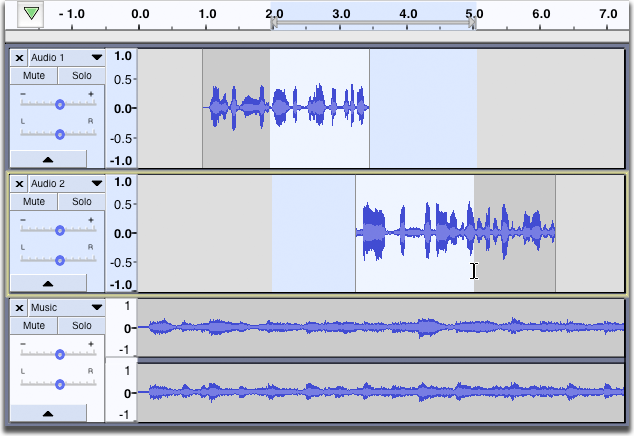

Selection Tool

The image above shows the Tools Toolbar with the Selection Tool selected.
- Click on this link to learn more about the Tools Toolbar.
- Click on other tools in the image to learn more about those tools.
If it's not already selected, choose the Selection tool from Tools Toolbar, as shown above. Next click the left mouse button anywhere inside of an audio track, then drag (in either direction) to the other edge of your selection, and release.
{kind=link}
Normally, you select both the tracks and the range simultaneously, by clicking and dragging. For example, to create the selection in the image below, make sure you're using Selection Tool , click in the track just after 2.0 seconds in the first track, then drag rightwards to just after 5.0 seconds as displayed on the Timeline, then downwards so that the gray selection region now includes the second track:
- 
Note that because the drag started in the first track and extended into the second track, only those two tracks are selected, as indicated by the blue-grey background color of the Track Control Panel. Therefore, any operation you perform will now only affect the selected area of the first two tracks.
This, and the method for selecting all audio are enough for using selections in Audacity.
Many more options for selecting audio are described on the Audacity Selection page.